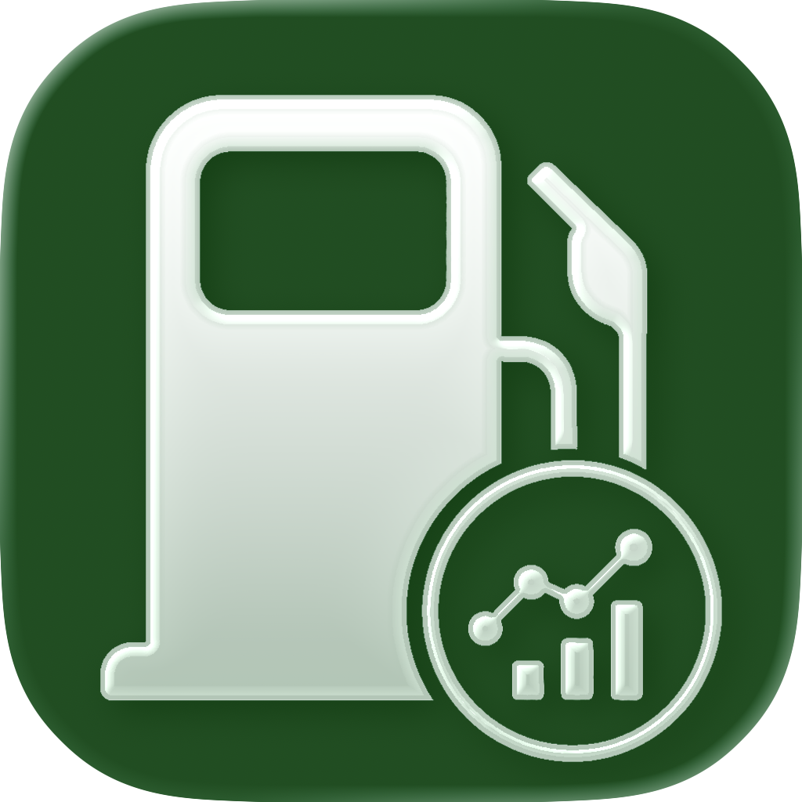

Tankvorgänge erfassen
Datum, Kilometer, Liter, Gesamtpreis, Kraftstoffart, Tankstelle und Notizen in einem klaren Formular speichern.

FuelTrackDrifeiOS App für Fahrzeugkosten
Tankvorgänge, Verbrauch und Kosten ruhig im Blick behalten. Eine klare App für alle, die ihre Fahrzeuge ohne Tabellenchaos dokumentieren möchten.
Wofür FuelTrackDrife da ist
FuelTrackDrife hilft dir, Tankvorgänge schnell zu erfassen, den realen Verbrauch zu verstehen und Kosten pro Fahrzeug nachzuhalten. Die App bleibt bewusst direkt: öffnen, eintragen, auswerten, fertig.
Funktionen
Datum, Kilometer, Liter, Gesamtpreis, Kraftstoffart, Tankstelle und Notizen in einem klaren Formular speichern.
Mehrere Fahrzeuge mit eigenem Kraftstofftyp, Kennzeichen und Saisonangaben verwalten.
Durchschnittsverbrauch und Werte einzelner Tankvorgänge auf Basis vollständiger Betankungen nachvollziehen.
Gespeicherte Tankstellen erneut auswählen oder über die Kartensuche schneller eintragen.
Auswertung
FuelTrackDrife zeigt Monatsverläufe, Tankstellenanteile und Fahrzeugtypen übersichtlich an. So erkennst du, was dein Fahrzeug wirklich verbraucht und wo die Kosten entstehen.
Daten & Kontrolle
Die App speichert Tankvorgänge und Fahrzeuge auf deinem Gerät. Für Wechsel, Sicherung oder Archivierung gibt es einen Export und Import im JSON-Format.